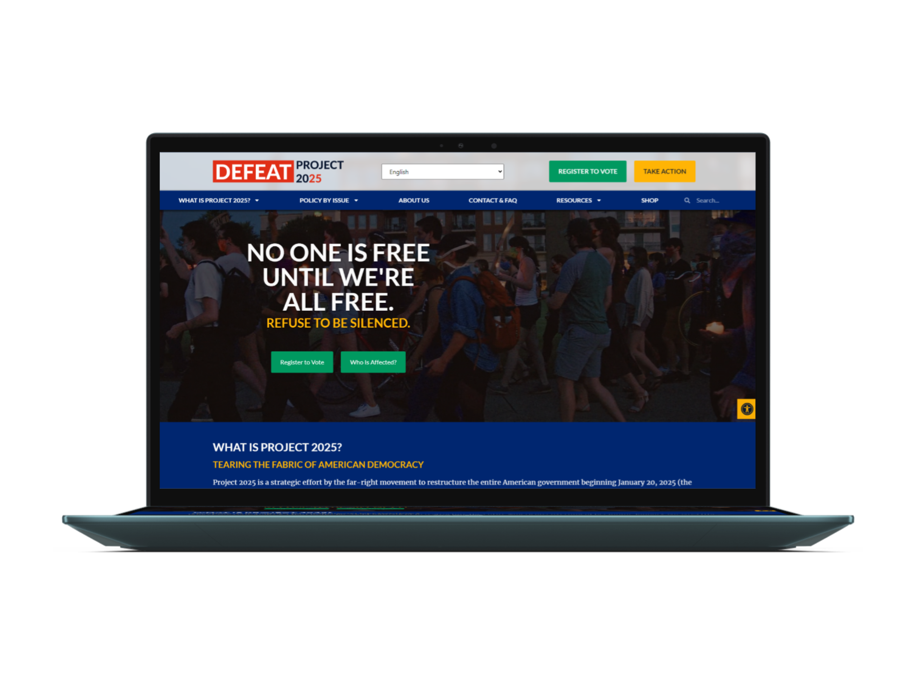
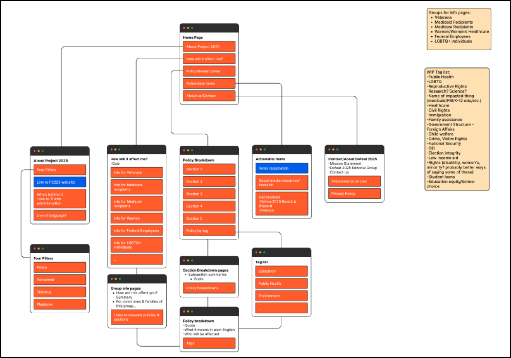

<!DOCTYPE html>
<html lang="en">
  <head>
    <meta name="viewport" content="width=device-width, initial-scale=1" />
    <title>Erin Lauderdale's Portfolio</title>
    <link rel="stylesheet" type="text/css" href="css/new.css" />
    <link rel="preconnect" href="https://fonts.googleapis.com" />
    <link rel="preconnect" href="https://fonts.gstatic.com" crossorigin />
    <link
      href="https://fonts.googleapis.com/css2?family=Josefin+Sans:ital,wght@0,100..700;1,100..700&display=swap"
      rel="stylesheet"
    />
    <link
      href="https://fonts.googleapis.com/css2?family=Cantarell:ital,wght@0,400;0,700;1,400;1,700&family=Josefin+Sans:ital,wght@0,100..700;1,100..700&display=swap"
      rel="stylesheet"
    />
    <script defer src="JS/newmenu.js"></script>
    <script defer src="JS/smoothscroll.js"></script>
    <script defer src="JS/csslider.js"></script>
    <script defer src="JS/backtotop.js"></script>
  </head>
</html>
<body>
  <!-- HEADER & MENU
       -------------------------------------------------------------- -->
  <section id="NAV">
    <div class="desktop-header">
      <div class="logo">
        <a href="index.html"></a>
      </div>
      <ul class="menu">
        <li>
          <a href="about.html">
            <h2 class="menu-text">About</h2>
            <div class="menu-item"></div
          ></a>
        </li>

        <li>
          <a href="work.html">
            <h2 class="menu-text">Work</h2>
            <div class="menu-item"></div>
          </a>
        </li>
        <li>
          <a href="contact.html">
            <h2 class="menu-text">Contact</h2>
            <div class="menu-item"></div
          ></a>
        </li>
      </ul>
    </div>

    <div class="mobile-header-cont">
      <div class="mobile-header">
        <div class="logo">
          <a href="index.html"></a>
        </div>
        <div class="hamburger">
          
        </div>
      </div>
      <div class="mobile-menu">
        <div class="mm-item">
          <a href="about.html">
            <h2>About</h2>
          </a>
        </div>

        <div class="mm-item">
          <a href="work.html">
            <h2>Work</h2>
          </a>
        </div>
        <div class="mm-item">
          <a href="contact.html">
            <h2>Contact</h2>
          </a>
        </div>
      </div>
    </div>
  </section>

  <!-- ------- -->
  <div class="page-content">
    <div class="inner-content">
      <div class="mobile-margin">
        <a href="work.html">
          <button class="pslider-btn">
            </button
        ></a>
      </div>
      <div class="cs-mockups">
        
        
      </div>
      <div class="page-header"></div>
      <div class="mobile-margin">
        <h1>Protecting Our Rights Through Education</h1>
      </div>
      <div class="y-box"></div>
      <div class="mobile-margin">
        <h3 class="p-highlight top-pad bottom-pad">
          Website Design & Development: Defeat Project 2025
        </h3>
        <div class="content-column justify-center">
          <h4>Challenge</h4>
          <p>
            Despite being released in April 2022, very few people were talking
            about Project 2025 before July 2024. Many of us who were aware of
            the document and influence of the Heritage Foundation felt anxious
            about the lack of general awareness. We decided to create an online
            resource to document and explain Project 2025 directly from the
            source. Our challenge was to break down over 900 pages of dry, legal
            language into a user-friendly website that provides direct quotes
            and explains how Project 2025's policies would impact everyday
            Americans.
          </p>
          <h4>Process</h4>
          <ul>
            <li>Created site maps and wireframes in Figma</li>
            <li>Developed brand style materials</li>
            <li>
              Created high-fidelity website mockups in Figma to review with the
              campaign
            </li>
            <li>
              Used WordPress and Elementor to build site pages and further
              develop our design
            </li>
            <li>
              Built an e-commerce page connected to Printify to sell merch to
              support our hosting costs
            </li>
            <li>
              Planned and executed user tests to receive feedback we could
              iterate on
            </li>
          </ul>
          <h4>Outcome</h4>
          <p>
            Since launching the site, we have consistently received 14k+
            visitors per week. The media has begun regularly talking about
            Project 2025 and it is no longer an unknown issue. We have continued
            to update the site with relevant information, but feel that our goal
            of raising awareness was accomplished.
          </p>
          <div class="content-column center-align bottom-pad">
            <a href="https://defeatproject2025.org/" target="_blank">
              <button class="g-btn fit">
                
                View the Website
              </button></a
            >
          </div>
        </div>

        <div class="content-row wrap justify-even">
          <a href="#INIT">
            <button class="g-btn fit">
              
              Getting Started
            </button></a
          >
          <a href="#DEF">
            <button class="g-btn fit">
              
              Design Process
            </button></a
          >
          <a href="#DEV">
            <button class="g-btn fit">
              
              Development
            </button></a
          >
          <a href="#TEST">
            <button class="g-btn fit">
              
              User Testing
            </button></a
          >
          <a href="#CONC">
            <button class="g-btn fit">
              
              Conclusion
            </button></a
          >
        </div>
      </div>
      <section class="cs-sec" id="INIT">
        <div class="page-header"></div>
        <div class="mobile-margin">
          <h2>Getting Started</h2>
        </div>
        <div class="y-box-cs"></div>
        <div class="content-column">
          <div class="single-row">
            <p>
              As the election approaches, I and many others have found ourselves
              anxious with the rise of populist authoritarianism in the U.S. I
              found a group of people online feeling a similar anxiety and
              worrying about Project 2025, a plan to install a
              hyper-conservative government authored by the Heritage Foundation.
              In April 2024, we began working together on Defeat Project 2025, a
              website that broke down the 900-page Mandate for Leadership into
              simple, easy to understand language.
            </p>
          </div>
          <div class="content-row center-align">
            <div class="cs-img">
              
            </div>
            <div class="content-column cs-desc">
              <div class="perm-row center-align">
                
                <h3>Site Map</h3>
              </div>
              <p>
                Since we were starting from scratch, I started by creating a
                basic sitemap that included the ideas we had tossed around for
                what the site could be. This helped the team organize our ideas
                and start fleshing them out beyond vague notions. Although this
                sitemap would change significantly through development, it was
                an extremely useful tool in the early stages of planning.
              </p>
            </div>
          </div>

          <div class="content-row center-align row-reverse">
            <div class="cs-img">
              
            </div>
            <div class="content-column cs-desc">
              <div class="perm-row center-align">
                
                <h3>Wireframes</h3>
              </div>
              <p>
                The first step to realize our ideas was to map out the site with
                some wireframes. I kept these low fidelity with few design
                elements to ensure I wasn’t limiting our future stylistic
                possibilities. We planned to pull quotes directly from the
                document and explain them, which seemed simple enough until I
                began figuring out how to map 900 pages of dense legal writing
                into a user friendly website. The essential layout of the site
                stayed true to these initial wireframes despite many content
                changes.
              </p>
            </div>
          </div>
        </div>
      </section>

      <section class="cs-sec" id="DEF">
        <div class="page-header"></div>
        <div class="mobile-margin">
          <h2>Design Process</h2>
        </div>
        <div class="y-box-cs"></div>

        <!-- SLIDER -->
        <div class="content-column center-align justify-center">
          <div class="cs-slider">
            <div class="cs-slide csslide-1">
              <div class="slider-img bottom-pad">
                
              </div>

              <h4 class="p-highlight">Style Guide</h4>
              <p>
                The other web developer on our team put together this style
                guide that served as a starting point for our styling
                discussions. It was important to us to emphasize patriotism,
                inclusivity, and ensure the site was easy to view and interact
                with for all users.
              </p>
            </div>

            <div class="cs-slide csslide-2">
              <div class="slider-img">
                
              </div>

              <h4 class="p-highlight">Final Color Palette</h4>
              <p>
                As we developed the site, we modified the color palette to meet
                accessibility standards and look the way we intended on our
                hosting platform. The final colors are much more intense, but
                provide more opportunities to utilize white text. Additionally,
                we opted to primarily use dark background colors to increase
                text visibility, as opposed to the bright background colors used
                in the initial style guide.
              </p>
            </div>
            <div class="cs-slide csslide-3">
              <div class="slider-img justify-center center-align cs-iter">
                
              </div>

              <h4 class="p-highlight">Logo</h4>
              <p>
                On our initial launch, we used a different logo provided by a
                former volunteer. Unfortunately we lost the the rights to it, so
                we have made the transition to a simpler, more streamlined logo.
                This version provides us variability in color, spacing, and
                size, which has been extremely useful as we launch merch.
              </p>
            </div>

            <div class="cs-slide csslide-4">
              <div class="slider-img mini-img bottom-pad">
                
              </div>

              <h4 class="p-highlight">Homepage First Draft</h4>
              <p>
                To give us a layout as we began development, I put together a
                mockup that combined the wireframe and style guide. This
                included a hero image that we decided on as a group, icons
                developed by other volunteers, and user interface items I
                developed in Figma.
              </p>
            </div>
          </div>
        </div>

        <div class="cs-slider-btns">
          <button class="pslider-btn slider-btn-left">
            
          </button>
          <button class="pslider-btn slider-btn-right">
            
          </button>
        </div>
        <div class="cs-slider-thumbnails center-align justify-center">
          <div class="slider-thumb thumb-1">
            
          </div>
          <div class="slider-thumb thumb-2">
            
          </div>

          <div class="slider-thumb thumb-3">
            
          </div>

          <div class="slider-thumb thumb-4">
            
          </div>
        </div>

        <!-- END SLIDER -->
      </section>
      <section class="cs-sec" id="DEV">
        <div class="page-header"></div>
        <div class="mobile-margin">
          <h2>Development</h2>
        </div>
        <div class="y-box-cs"></div>
        <div class="content-column">
          <div class="single-row">
            <p>
              Our goal was to launch the site as soon as possible, so my team
              jumped right into development while others worked on content. We
              already had our site linked to WordPress, so we decided to use the
              Elementor plugin for ease of use and minimal licensing cost.
            </p>
          </div>
          <!-- ITERATION HIGHLIGHT -->
          <div class="content-column">
            <div class="content-row center-align">
              <div class="content-column">
                <div class="cs-img">
                  
                </div>
              </div>
              <div class="content-column cs-desc">
                <div class="perm-row center-align">
                  
                  <h3>Homepage</h3>
                </div>
                <p>
                  We established the final design aesthetics while developing
                  the homepage and used it as a guide for the rest of the site.
                  Our initial site plan included a “How will it affect me?”
                  quiz, which we decided to condense into icon buttons on the
                  homepage. Our goal with this section was to make it easy for
                  people to identify direct impacts on their life. The rest of
                  the homepage introduces the premise of the document and our
                  goals as an organization.
                </p>
              </div>
            </div>

            <!-- END ITERATION HIGHLIGHT -->
            <!-- ITERATION HIGHLIGHT -->
            <div class="content-row center-align row-reverse">
              <div class="content-row bottom-pad">
                <div class="content-column">
                  <div class="cs-img cs-iter">
                    
                  </div>
                </div>
              </div>
              <div class="content-column cs-desc-s">
                <div class="perm-row center-align">
                  
                  <h3>Document Breakdown</h3>
                </div>
                <p>
                  We spent a long time discussing the simplest, most
                  straightforward way to breakdown the document for our users.
                  Initially I built a layered menu structure to guide the user
                  through different sections and chapters of the document.
                  However, user testing proved this to be unnecessarily
                  complicated. Instead, we named each chapter under the
                  “Government” tab in the menu because each chapter corresponds
                  to a government agency. The quotes were sorted into their
                  respective chapters, then further organized by affected people
                  and topics.
                </p>
              </div>
            </div>
            <!-- END ITERATION HIGHLIGHT -->
            <!-- ITERATION HIGHLIGHT -->

            <div class="content-row center-align">
              <div class="content-column">
                <div class="cs-img">
                  
                </div>
              </div>
              <div class="content-column cs-desc">
                <div class="perm-row center-align">
                  
                  <h3>Quotes</h3>
                </div>
                <p>
                  The primary purpose of our website is to introduce users to
                  Project 2025 and explain its purpose in plain language. We
                  took direct quotes from the document and explained their
                  effects in context using simple language. We sorted them
                  within each page by effect severity using the date and post
                  order functions.
                </p>
              </div>
            </div>
            <!-- END ITERATION HIGHLIGHT -->
            <!-- ITERATION HIGHLIGHT -->
            <div class="content-row center-align row-reverse bottom-pad">
              <div class="content-column">
                <div class="cs-img">
                  
                </div>
              </div>
              <div class="content-column cs-desc">
                <div class="perm-row center-align">
                  
                  <h3>Resources</h3>
                </div>
                <p>
                  It was extremely important to us that we were able to direct
                  our users to action. It was also apparent from our Discord
                  community that the content of Project 2025 was very
                  emotionally upsetting, so we wanted to ensure we had mental
                  health resources accessible for those encountering it for the
                  first time. There have been a number of articles, videos, and
                  other websites created to raise awareness of Project 2025, so
                  we wanted to include links to some of those as well. To
                  address these concerns, we developed resource pages including
                  voter registration and volunteering, mental health assistance,
                  and further information on Project 2025.
                </p>
              </div>
            </div>
            <!-- END ITERATION HIGHLIGHT -->

            <!-- ITERATION HIGHLIGHT -->

            <div class="content-row center-align">
              <div class="content-column">
                <div class="cs-img">
                  
                </div>
              </div>
              <div class="content-column cs-desc">
                <div class="perm-row center-align">
                  
                  <h3>Shop</h3>
                </div>
                <p>
                  Once our site launched and we were getting consistent traffic,
                  we decided to begin selling branded merch to support hosting
                  costs. I developed an ecommerce storefront with WooCommerce
                  and Printify. I followed previously established design
                  guidelines while working within the constraints of pre-built
                  ecommerce templates. The result was functional and visually
                  consistent with the other pages of the site.
                </p>
              </div>
            </div>
            <!-- END ITERATION HIGHLIGHT -->
          </div>
        </div>
      </section>
      <section class="cs-sec" id="TEST">
        <div class="page-header"></div>
        <div class="mobile-margin">
          <h2>User Testing</h2>
        </div>
        <div class="y-box-cs"></div>
        <div class="content-column">
          <div class="single-row">
            <p>
              One of our main goals was to create a user-friendly website, so I
              conducted rounds of user testing to receive feedback and iterate
              on our freshly launched site. I created and executed the testing
              plan, while other developers on the project continued to implement
              content.
            </p>
          </div>
          <div class="content-row center-align">
            <div class="cs-img">
              
            </div>
            <div class="content-column cs-desc">
              <div class="perm-row center-align">
                
                <h3>Testing Plan</h3>
              </div>
              <p>
                I created the user testing plan with the goals of understanding
                user’s intentions when visiting the site, identifying user pain
                points in the initial iteration of the design, and to determine
                the most important next steps in development. We had extensive
                discussions as a team about who our primary users would be and
                ultimately decided that our audience needed to be broad to
                engage the highest number of voters. Our goal was to be
                accessible to those who rarely engage with politics and wanted
                short, simple explanations of the policies as well as provide
                context of the policies to those who wanted to better understand
                the document. In finding testing participants, I looked for a
                mix of non-tech savvy individuals who had little/no information
                about Project 2025 and highly tech savvy, highly politically
                engaged individuals.
              </p>
            </div>
          </div>
          <div class="content-column center-align justify-center">
            <div class="perm-row center-align">
              
              <h3>Recruitment & Process</h3>
            </div>
            <div class="single-row">
              <p>
                I was able to recruit seven interview participants of a variety
                of ages and backgrounds. It was challenging to find willing
                participants that were not familiar with Project 2025, but I did
                get a couple with limited knowledge of it. I recruited
                participants through social media and conducted interviews
                remotely. Four of the seven had experience in marketing, web
                design, or web development, which resulted in robust technical
                feedback.
              </p>
            </div>
          </div>

          <div class="content-row center-align row-reverse">
            <div class="content-column">
              <div class="cs-img">
                
              </div>
              <span class="c">First iteration</span>
              <div class="cs-img m-half">
                
              </div>
              <span class="c">Second iteration</span>
            </div>
            <div class="content-column cs-desc-s">
              <div class="perm-row center-align">
                
                <h3>Results</h3>
              </div>
              <p>
                User testing proved extremely fruitful in providing actionable
                steps to improve the performance of the site. We made aesthetic,
                content, and functionality changes, all spurred by the feedback
                we received. For example, we implemented a system to order
                document quotes by importance after multiple users reported
                wanting to see the most important at the top. We simplified the
                fonts used in the homepage hero after we got feedback that it
                looked too “busy”. We also changed the placement of topics in
                the site navigation menus after users reported being unable to
                locate information on the site. Although we did take a lot of
                feedback- we were mindful to ensure each change was validated by
                multiple sources so that erroneous opinions would not alter the
                intention of the design and content. Overall, the user testing
                process proved extremely useful in improving the usability of
                the site.
              </p>
            </div>
          </div>
        </div>
      </section>
      <section class="cs-sec" id="CONC">
        <div class="page-header"></div>
        <div class="mobile-margin">
          <h2>Conclusion</h2>
        </div>
        <div class="y-box-cs"></div>
        <div class="content-column mobile-margin">
          <div class="perm-row center-align">
            
            <h3>Next Steps</h3>
          </div>

          <div class="single-row bottom-pad">
            <p>
              As more prominent figures have come out naming Project 2025, we
              feel that our initial goal of spreading the word was successful.
              Our site receives over a thousand unique visitors per week and we
              have gotten consistent positive feedback from users over social
              media. I continue to run the ecommerce site and maintain the site,
              but most of the development team has left the project or taken a
              break to pursue other projects. Although I am overall very happy
              with the results of the site, I always strive to improve and have
              a number of items I would pursue if afforded the time and
              resources:
            </p>

            <ul>
              <li>Improve the site performance, specifically loading times.</li>
              <li>
                Further refine content summaries for optimal user experience.
              </li>
              <li>
                Improve the stock image choices throughout the site and improve
                header crops on some sub-pages.
              </li>
              <li>
                Create a brand guide for our social media accounts that matches
                the design choices of the website.
              </li>
              <li>
                Add a blog section for organization updates and member-created
                content (this was suggested a number of times but never panned
                out!)
              </li>
            </ul>
          </div>

          <div class="perm-row center-align">
            
            <h3>Final Thoughts</h3>
          </div>
          <div class="single-row">
            <p>
              This was by far the most responsibility I have taken on in a
              website project thus far. I did not initially join the group
              intending to become the head of web development, but circumstances
              were such that I ended up taking on the role. Overall, I am proud
              of my work on this project and the impact our group has had. I
              learned a lot about development and practical design and was able
              to see the impacts of my work in real time. There were challenges
              in the group dynamics and the nature of it being a large scale
              volunteer project. I feel that I handled the situations that arose
              the best that I could and improved the clarity of my own
              communication in the process. Although there are some things I
              would change, I think the website turned out as envisioned. I am
              thankful for the team that helped me put it together and hope our
              organization can continue to work towards lasting positive change!
            </p>
          </div>
        </div>
        <div class="return hidden">
          <a href="#NAV">
            <button class="pslider-btn">
              </button
          ></a>
        </div>
      </section>
      <div class="content-column justify-center center-align">
        <div class="cta-end g-shadow">
          <div class="content-column justify-center center-align">
            <h4>Like what you see?</h4>
            <button class="g-btn">
              <a href="contact.html"> Contact me! </a>
            </button>
          </div>
        </div>
      </div>
    </div>
  </div>
</body>
